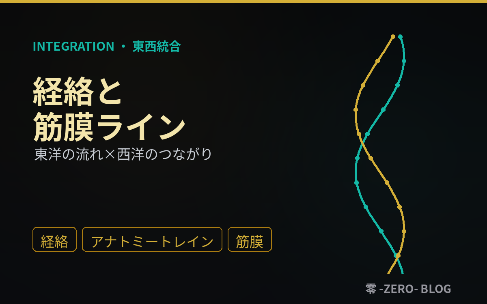
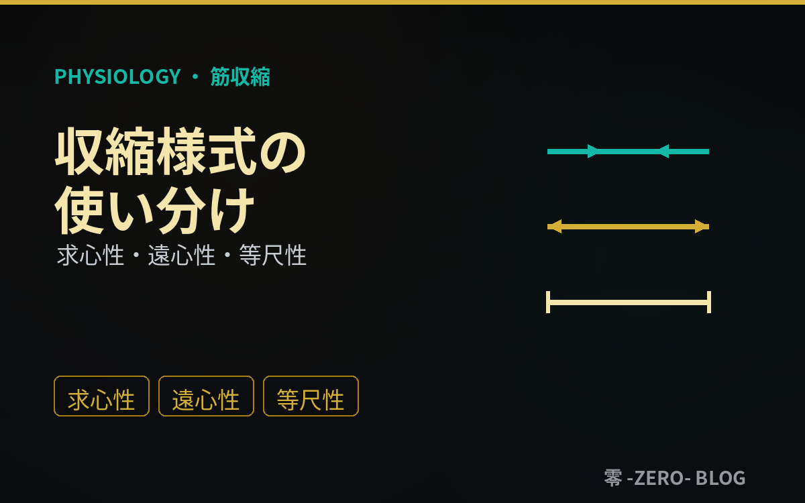
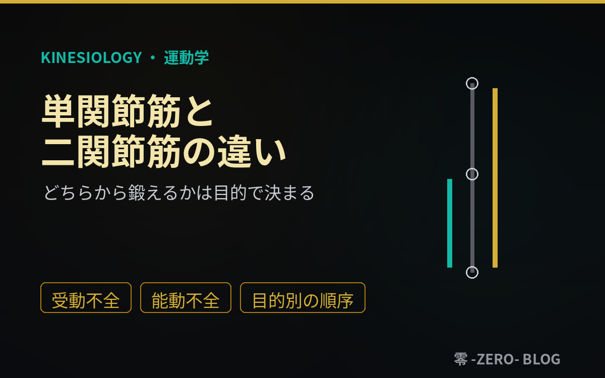
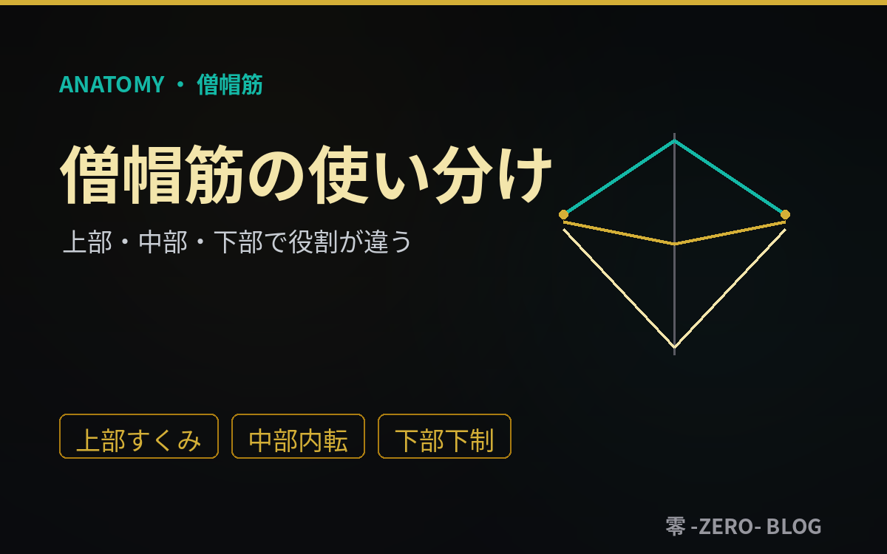
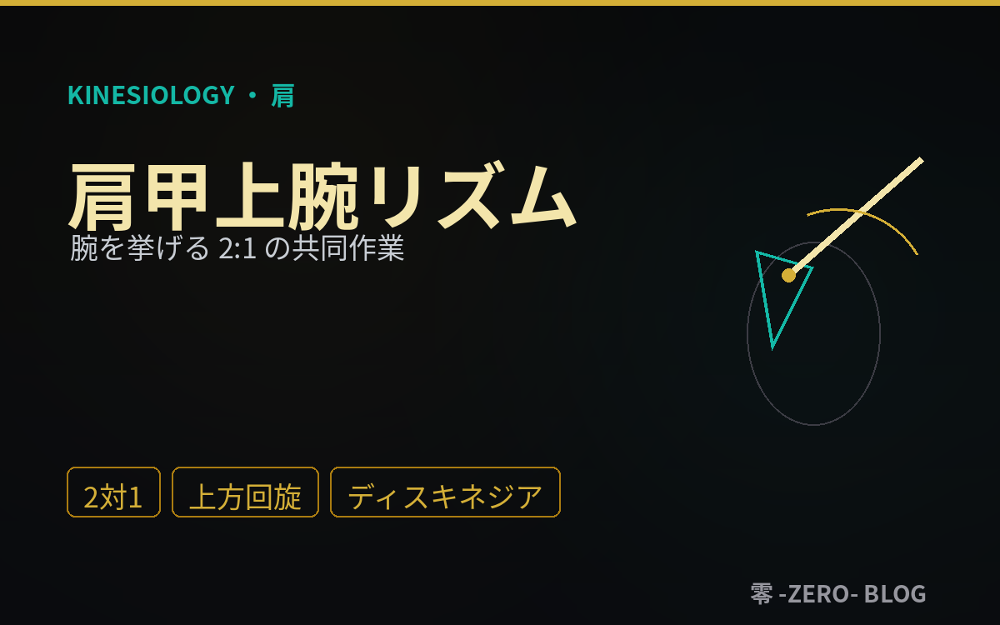
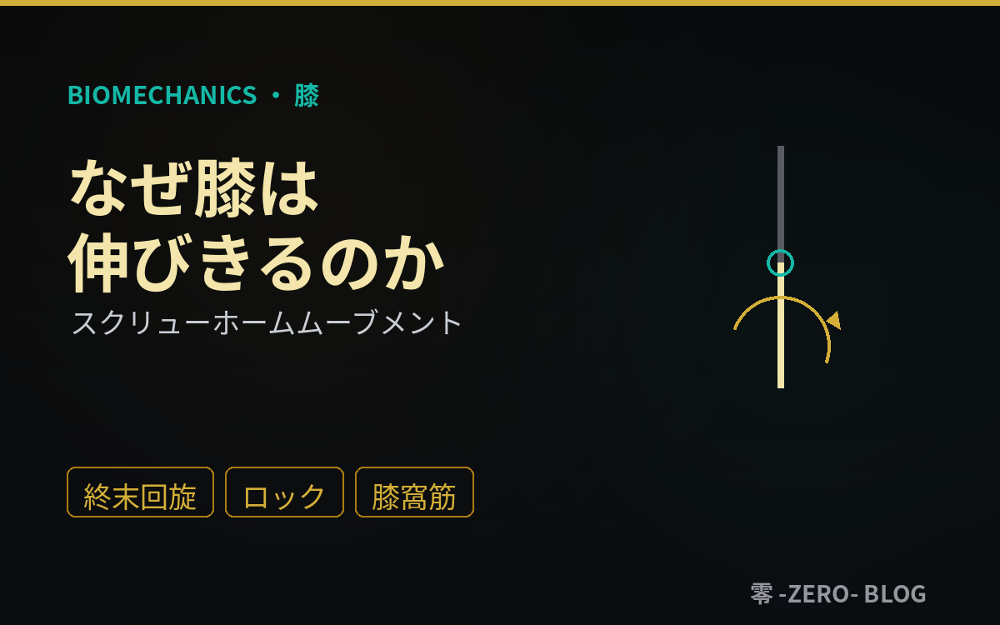
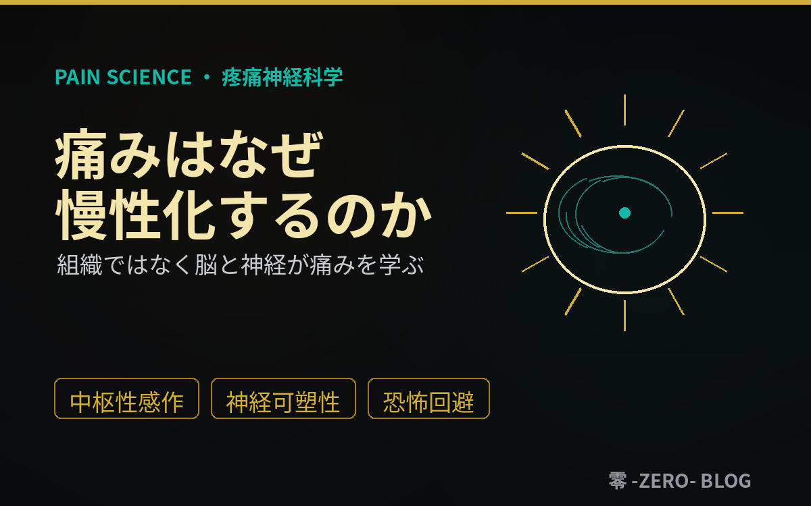
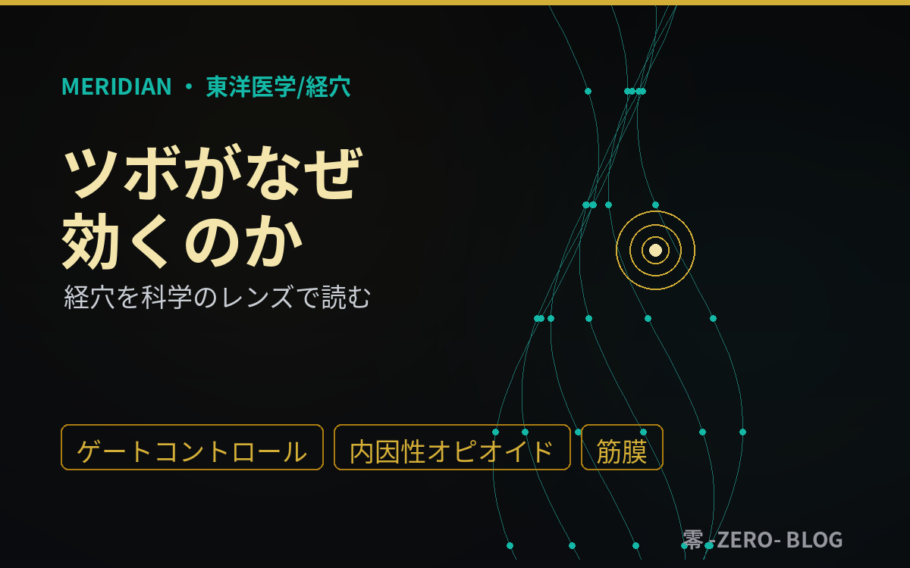
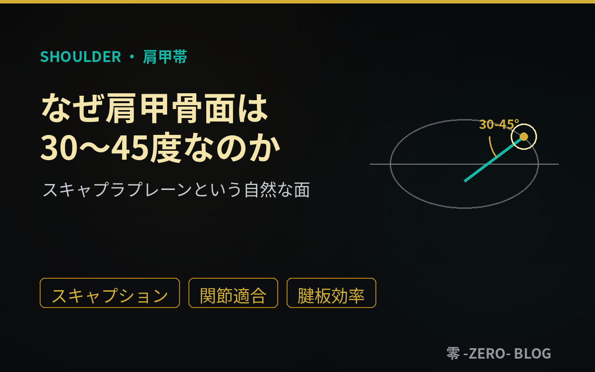

東西統合・筋膜/経絡
2026.07.07
経絡と筋膜ライン ― 東洋の"流れ"と西洋の"つながり"は重なるのか
別々の起源を持つ経絡とアナトミートレイン（筋膜ライン）が、驚くほど似た経路を描く。膀胱経とバックラインの一致、経穴とトリガーポイントの重なり、そして安易に等号で結ばない違いまでを、東洋医学・ファシア研究の両レンズから解説。全身を"線"で読む一本。
2026年7月に公開された講義記事（全3件）の一覧です。

別々の起源を持つ経絡とアナトミートレイン（筋膜ライン）が、驚くほど似た経路を描く。膀胱経とバックラインの一致、経穴とトリガーポイントの重なり、そして安易に等号で結ばない違いまでを、東洋医学・ファシア研究の両レンズから解説。全身を"線"で読む一本。

筋は縮むだけではない。縮みながら・伸ばされながら・長さを変えずに力を出す3様式で、得られる効果が変わる。求心性/遠心性/等尺性の特徴と、遠心性の傷害予防・等尺性の鎮痛/安定価値、目的別の使い分けを運動生理学の視点から解説。

単関節筋は安定とコントロール、二関節筋は効率と連結。二関節筋特有の受動不全・能動不全・レングステンションを解説し、トレーニングでどちらから行うかを筋力/パフォーマンス・筋肥大・リハビリ・ウォームアップの目的別に整理する。順番を目的から逆算するための一本。

僧帽筋はひとつの筋なのに、上部・中部・下部で作用が違う。挙上/内転/下制と上方回旋の使い分け、フォースカップルでの働き、そして現代人に多い「上部過緊張×下部弱化」と肩こりの関係までを、トレーナー・セラピスト向けに解説。揉むより使い分けで捉える一本。

腕を頭上まで挙げるとき、肩甲上腕関節と肩甲骨は約2:1で協調する。この肩甲上腕リズムの仕組み、挙上の各相、支える要素、そしてリズムの破綻＝スキャプラディスキネジアが招く肩の不調までを、トレーナー・セラピスト向けに解説。

膝を伸ばしきると、脛骨がわずかに外旋して関節がロックされる――スクリューホームムーブメント。回旋が起こる構造的理由、省エネで立てる仕組み、ロックを解く膝窩筋、破綻が招く影響までを、トレーナー・セラピスト向けに解説。

腸腰筋は背骨と脚を直接つなぐ唯一の筋。股関節屈曲と腰椎安定を担い、座位による短縮で反り腰型腰痛の主役になる。解剖と役割、なぜ腰痛と関わるのか、「硬い」と「効かない」の見分けまでを、トレーナー・セラピスト向けに解説。

中殿筋は、歩行の一歩ごとに片脚支持で骨盤を水平に保つ安定筋。解剖と役割、トレンデレンブルグ徴候、機能低下が招く膝ニーイン・腰痛・動揺性歩行までを、機能解剖・運動学の視点から、トレーナー・セラピスト向けに解説。

組織が治っても痛みが残るのはなぜか。痛みは損傷の信号ではなく脳が生み出す防御の体験だ。急性痛と慢性痛の違い、中枢性感作、脳が痛みを学習する神経可塑性、恐怖回避・自律神経・睡眠といった要因までを、疼痛神経科学の多角的レンズから解説。

ツボが効くのは神秘ではない。ゲートコントロール、内因性オピオイド、体性-自律神経反射、筋膜/トリガーポイントとの重なり――経穴の効果と生理学的メカニズム、臨床で何ができるかを、東洋医学と現代科学の両レンズから解説。「気の通り道」と「神経・筋膜」を統合する一本。

仙腸関節は、ほとんど動かないのにわずかに動き、上半身と下半身の荷重が乗り換える骨盤の要だ。半関節としての構造、ニューテーション、形と力の2つの自己ロック（フォーム/フォースクロージャー）、荷重伝達の役割、機能不全が招く腰殿部痛までを、トレーナー・セラピスト向けに解説。

背骨のS字カーブは歪みではなく、衝撃を吸収し、強度を増し、重心を効率よく保つための設計だ。4つの弯曲、一次弯曲と二次弯曲の発達、S字が果たす3つの役割、弯曲を保つ仕組み、崩れると起こる影響までを、トレーナー・セラピスト向けに解説。

肩甲骨は前額面から約30〜45度前方を向く。この角度は、関節がよく噛み合い・腱板が効率よく働き・挟み込みが起きにくいという3条件を同時に満たす設計だ。スキャプラプレーン、スキャプション、肩甲上腕リズム、面が崩れる原因と影響までを、トレーナー・セラピスト向けに解説。

骨盤の前傾は異常ではなく生理的な標準。約10〜15°の軽度前傾が省エネの直立と腰椎前弯を生む。ASIS/PSISの指標、前傾を生む3つの理由、正常と過剰前傾の境界、下位交差症候群、過剰前傾が全身に及ぼす影響までを、トレーナー・セラピスト向けに解説。

地面と接する唯一の部位である足底は、体重を支える土台であり、姿勢を制御するセンサーでもある。3つのアーチ、足底腱膜とウィンドラス機構、回内/回外の切り替え、足底の固有感覚、機能低下が全身に及ぼす影響までを、トレーナー・セラピスト向けに解説。

腰の背面に広がる胸腰筋膜（TLF）は、上半身と下半身、左右、深層と表層をつなぐ力の中継点であり、痛みと感覚の器官でもある。層構造、後斜スリング（広背筋⇄大殿筋）、腹腔内圧との連結、機能不全が招く腰痛までを、トレーナー・セラピスト向けに解説。

身体はつながったシステム。ズレは一カ所にとどまらず、下から上へ（上行性）、上から下へ（下行性）と連鎖的に伝播する。それぞれの定義と代表例、なぜ連鎖するのか、崩れる原因と影響までを、トレーナー・セラピスト向けに解説。「連鎖の起点」を探す視点を養う一本。